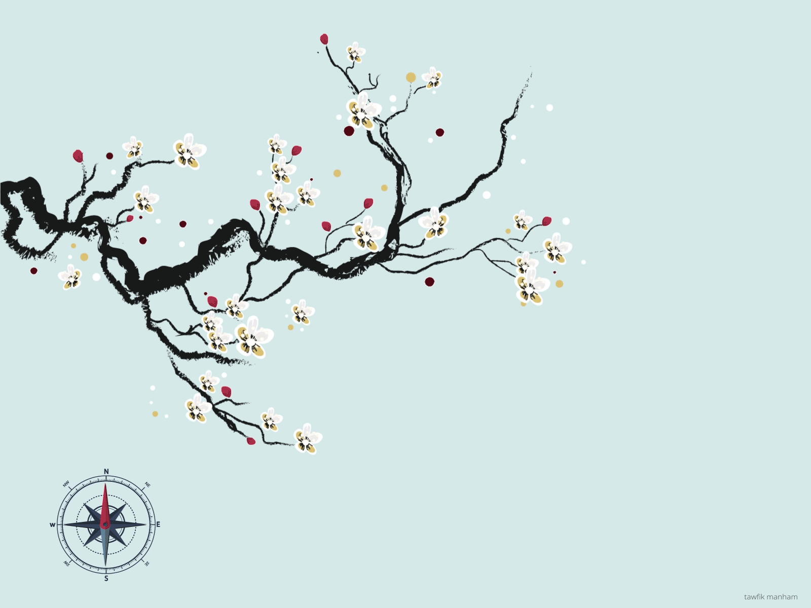

Ikinspiring
The IKIGAI
The people of Japan believe that everyone has an ikigai – a reason to jump out of bed each morning. And according to the residents of the Japanese island of Okinawa – the world’s longest-living people – finding it is the key to a longer and more fulfilled life. Inspiring and comforting, this book will give you the life-changing tools to uncover your personal ikigai. It will show you how to leave urgency behind, find your purpose, nurture friendships and throw yourself into your passions.
An important point to make about goals in relation to ikigai is the achievement of them is not as important as the process and effort that goes into them. For many Japanese, Ikigai has an inextricable link to a concept called kodawari, doing things properly with great attention to detail. The dedication to a process and the commitment to progress is more important than the achievement of any goal to practitioners of kodawari.
Also these goals don’t need to be impressive and driven by the ego. For many Japanese, their ikigai can be the humble pursuit of a seemingly meaningless goal.

Your purpose doesn’t have to be tied to your career. I have many friends who told me they knew they were meant to have children before they even understood what it was to conceive. I’ve always believed that accepting the call to be a mother is the choice to become the ultimate spiritual teacher. Because mothers live in service and sacrifice to their children.
Understanding Ikigai
As previously mentioned, the biggest misconception of ikigai is that it is a sweet spot of our professional life, where we achieve our one true purpose on a grand scale. We need to be careful about how we think about our ikigai. It is not a destination or goal to achieve. It does encompass goals, but with ikigai there is no destination.
Ikigai is not about what you want out of life. Ikigai is about who you want to become - your actualized self. This is why ikigai is personal and also for many people private. And it is considered by some Japanese as the most honorable thing one can do.
Feeling ikigai entails actions of devoting oneself to pursuits one enjoys and is associated with feelings of accomplishment and fulfillment. Furthermore, it includes awareness of values such as the purpose of life and the meaning of existence; it is future oriented, as in goal seeking.
